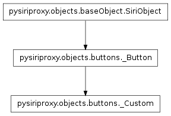
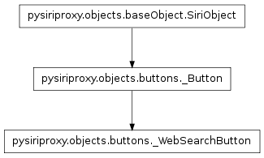
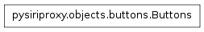
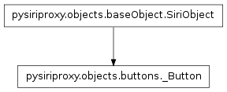

The buttons module¶
The buttons module contains classes pertaining to creating objects which can be sent to the iPhone or Apple’s web server which pertain to creating buttons on the iPhone.
The _Custom class¶

The _Custom class creates a button that has the iPhone send a custom command to the event that it is pressed.
The _WebSearchButton class¶

The _WebSearchButton creates a button on the iPhone Siri view which will perform a web search for a specific query in the event that the button is pressed.
The SiriObject class¶

The SiriObject class encapsulates the base functionality for all object being sent to the iPhone or to Apple’s web server.
Note
This class is meant to be subclassed to provide the implementation for a specific object.
The identifier which indicates the version of the protocol.
Determine if the given object is a list of arguments, or not.
- obj – The object
Determine if the given object is a SiriObject, or not.
- obj – The object
Make the SiriObject the root object.
- refId – The refId for this object
- aceId – The aceId for this object
Set the ace id for this object.
- aceId – The aceId for this object
Takes a list of strings which represent names of input variables and sets properties of the same name on the current object if the value of the argument is not None.
- argumentNames – The list of argument names to set
- localVars – The local variables
Set the ref id for this object.
- refId – The refId for this object
Convert this object into a Python dictionary.
The Actions class¶
The Actions class contains a list of Action types as well as a function for creating specific types of Actions.
This class provides a factory function for creating Actions of a specific type.
The CustomCommand action type.
The WebSearch action type.
Return a specific Action wrapped in a SendCommands object so it can be sent to Siri as a command.
- actionType – The type of Action to create
- args – The arguments
- kwargs – The keyword arguments
The Buttons class¶

The Buttons class contains the various types of Buttons as well as a function for creating Buttons of a specific type.
This class provides a factory function for creating Buttons of a specific type.
A button that executes a custom command when it is pressed.
A button that performs a web search for a specific query when it is pressed.
Create a Button of the given type.
- buttonType – The type of Button to create
- buttonText – The text displayed on the button
- args – The arguments
- kwargs – The keyword arguments
The _Button class¶

The _Button class encapsulates the base functionality for creating a button on the iPhone Siri view.